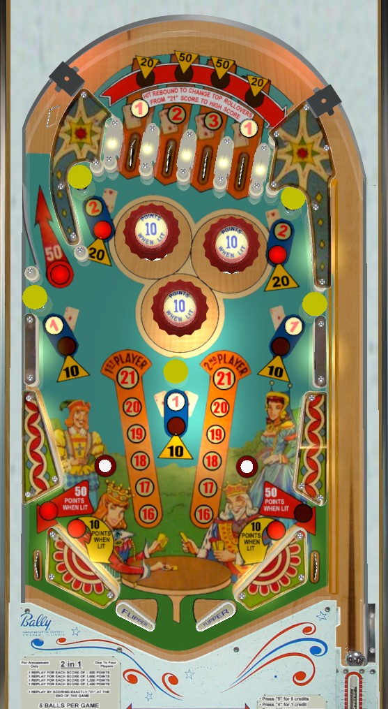

This game's title refers to the "two different games" that are played simultaneously in this one pinball table: "high score" (conventional pinball points) or "21" (a vaguely blackjack-inspired game, referred to here as 'card points'). Both rulesets are described on this page.
To begin each ball, the top lanes score 10-20-30-10 points from left to right. Hitting the wall switch above-right of the rightmost top lane increases the lane values to 20-50-50-20 points. The lane values reset as soon as any top lane is made.
Upper mushroom bumpers score 20 points. The mushroom bumpers across the middle of the table score 10 points.
The left orbit shot back to the top of the table always scores 50 points. Out lanes score 10 points, or 50 when lit; the left out lane is lit by making the 1st or 3rd top lanes from left, and the right out lane is lit by making the 2nd or 4th top lanes from left. Lit out lanes reset at the end of the ball.
Pop bumpers and slingshots score 1 point, or 10 when lit. They are lit intermittently and pseudo-randomly based on switch hits. This game likely uses a dynamic difficulty system common in many mid-1960s Bally games that causes features to be lit less frequently if the machine has recently given out a lot of free games.
To begin each ball, the top lanes score 1-2-3-1 card points from left to right. Hitting the wall switch above-right of the top lanes to increase their pinball score value causes the top lanes to give 0 card points.
Upper mushroom bumpers give 2 card points and lower mushroom bumpers score 1 card point.
Each player's card point total is shown on the backglass below their pinball score using reels with red digits. A player whose card score is between 16 and 21 inclusive will also have their score lit on the playfield. The only goal with card score is to end a game with exactly 21 card points to earn one free game. It is possible to go over 21 card points. There is no other award for reaching or ending on any particular card point value.
At the start of each ball, if you are happy with your card point total and do not want to risk going over, press the Hold button on the front of the cabinet. This prevents the mushroom bumpers from awarding card points, but the top lanes still work normally, so if you want to completely avoid getting more card points, you'll need to hit the wall switch above-right of the rightmost top lane to switch the lanes to pinball score mode.
There are no in lanes, extra ball features, playfield Specials, end of ball bonus, or save features such as out lane gates, kickbacks, or center posts. Tilt ends game, but only for the player who tilted.
The below picture of 2 in 1's playfield was taken from the VPX recreation by Loserman76 and Kees.
